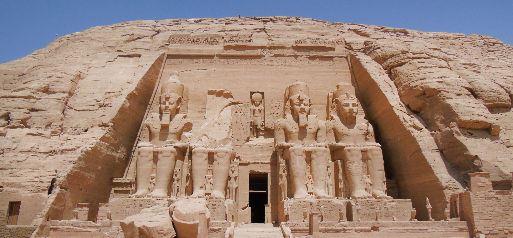

Egyiptom

Egyiptom (arabul: مصر, IPA: [misˤɾ], Miszr; egyiptomi arab ejtéssel: [ˈmɑsˤɾ], Maszr), hivatalosan Egyiptomi Arab Köztársaság (arabul: جمهورية مصر العربية, IPA: [Dzsumhúrijat Miszr al-Arabijah]) transzkontinentális ország, területének nagyobbik része Észak-Afrikában, kisebb része Délnyugat-Ázsiában található. A két földrészt az ország tulajdonában álló Szuezi-csatorna választja el egymástól.
Helyezkedés
Az országot nyugatról Líbia, délről Szudán, északról a Földközi-tenger, északkeletről a Gázai övezet és Izrael, keletről pedig a Vörös-tenger határolja. Fővárosa a középkor óta az arab és az iszlám világ központja, Kairó, mely több mint húszmillió lakosával a világ egyik legnagyobb agglomerációja.
Éghajlat
A passzátövezetben fekvő Egyiptomnak zonális sivatagi éghajlata van. Csak a Földközi-tenger partvidékén, illetve a Nílus-delta északi peremén hull (télen) valamennyi csapadék – itt száraz szubtrópusi éghajlat alakult ki.
Gasztronómia
Egyiptomi asszony friss zöldségeket válogat. A mai egyiptomi konyha is használja a Nílus menti termékeny területen termesztett gabonaféléket, zöldségeket, továbbá meghatározó a szerepe a baromfihúsnak és a gyümölcsöknek. Alapeleme a konyhának az eis baladi nevű kenyér.
Történelme
Korai dinasztikus időszak (i. e. 3150–2686)
Fő cikk: Korai dinasztikus időszak (Egyiptom)
A korai dinasztikus időszak hozzávetőlegesen a korai mezopotámiai sumér - akkád civilizáció és az ősi Elam korabeli volt . Az időszámításunk előtti harmadik században élt egyiptomi pap, Manetho a királyok hosszú sorát Menestől saját koráig 30 dinasztiába csoportosította, ez a rendszer ma is használatos. Hivatalos történelmét a "Meni" (vagy görögül Menes) nevű királlyal kezdte, akiről azt hitték, hogy egyesítette Felső- és Alsó-Egyiptom két királyságát .

Hafré piramisa A terület viszonylagos elszigeteltsége és a Nílus évenkénti áradásai következtében a Nílus völgyében alakult ki az ókori Egyiptom, az ókor egyik legfejlettebb civilizációja, miután Ménész (Mina) I. e. 3000 körül egyesítette Alsó- és Felső-Egyiptomot. A birodalom mintegy háromezer évig állt fenn; a XXX. dinasztia hatalmát a perzsák döntötték meg I. e. 342-ben, így rövid függetlenedést követően az I. e. 525-ben már meghódított Egyiptom ismét az Óperzsa Birodalom része lett. A folyton lázongó tartományt I. e. 332-ben foglalták el Nagy Sándor csapatai, majd halála után egyik hadvezére, I. Ptolemaiosz vezetésével ismét függetlenedett. 
Egyiptom a 7. század közepén a iszlám zászlaja alatt egyesült arabok hódításának esett áldozatul. Miután az Újperzsa Birodalommal folytatott, mintegy ötvenéves háborúskodás során kimerült császárság 636-ban döntő vereséget szenvedett az eltökélt araboktól a jarmúki csatában, Szíria és Palesztina után Egyiptom is elesett. 641-ben a bizánciak vereséget szenvedtek a babilóni csatában Amr ibn al-Ász hadaitól, és a tartomány evakuálása mellett döntöttek. A szeptember 12-én elhagyott Alexandriát a Kürosz pátriárka által aláírt szerződésben vállaltak értelmében az arabok szeptember 29-én bevonultak a városba.
Az újkori Egyiptom történelmi periódusa az ókori Egyiptom után következik, a modern időkig tart. Általában az 1517-es oszmán-török hódítástól kezdik számolni, amikor is Egyiptom a török birodalom részévé vált, és ez a közel-keleti régió sok tekintetben az oszmán befolyás alá került. Az újkori Egyiptom számos fontos politikai és társadalmi változáson ment keresztül, többek között a francia és az angol befolyás észlelhető a területen.
Jelenkori Egyiptom az ország történelmének és kultúrájának fontos része, amely sokféle politikai és társadalmi dinamikát tartalmaz. Az 1952-es egyiptomi forradalom és az azt követő események jelentősen formálták az ország jelenlegi politikai és társadalmi környezetét. Az egyik legfontosabb esemény az 1952-es egyiptomi forradalom volt, amelynek során az Egyiptomi Szabad Tisztek Mozgalma (Free Officers Movement) vette át az uralmat az országban. Ennek eredményeként az uralkodói rendszer megszűnt, és az ország republikánus állammá vált.